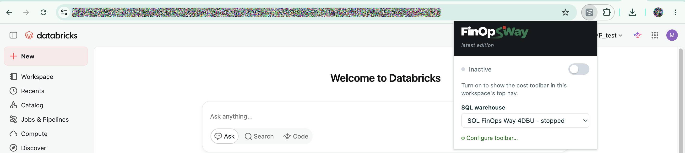
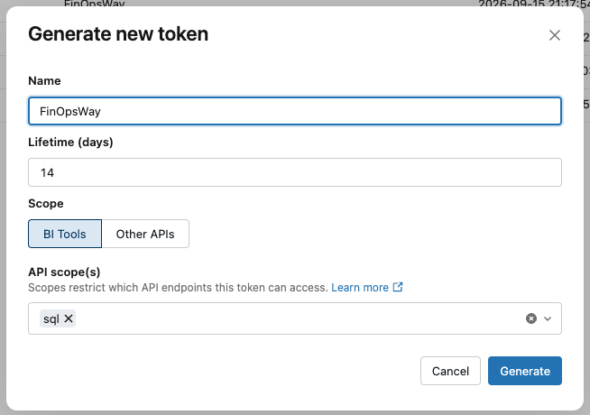

Getting started
Set up FinOpsWay in your browser
A short path from installing the extension to seeing the cost of a Databricks cluster in its own page navigation.
1
Install
Add FinOpsWay to your browser
Install the extension from your browser’s store. No FinOpsWay account is required.
Available for
Google Chrome
Get the extension
 Available for
Microsoft Edge
Get the extension
Available for
Mozilla Firefox
Get the extension
Available for
Microsoft Edge
Get the extension
Available for
Mozilla Firefox
Get the extension
Available for
Microsoft Edge
Get the extension
Available for
Mozilla Firefox
Get the extension
Microsoft Edge uses the Chrome Web Store listing.
3
Create
Create and configure a cluster
- In Databricks, go to Compute -> SQL warehouses and select Create SQL warehouse (2X-Small).
- Give the cluster a clear name, choose its access mode.
- Set an auto-termination period 5 minutes, then create the cluster.
2
Connect
Connect your Databricks workspace
- Open any page in the Databricks workspace, and then activate the FinOpsWay extension.
- Select the workspace connection type: Access token (recommended) or Browser session (internal API)
- Create a personal access token Settings -> User -> Developer -> Access Tokens -> Manage.
And choosesqlin API scopes. - Paste a personal access token for that workspace.
- Select a SQL warehouse that can query
system.billingandsystem.compute.

